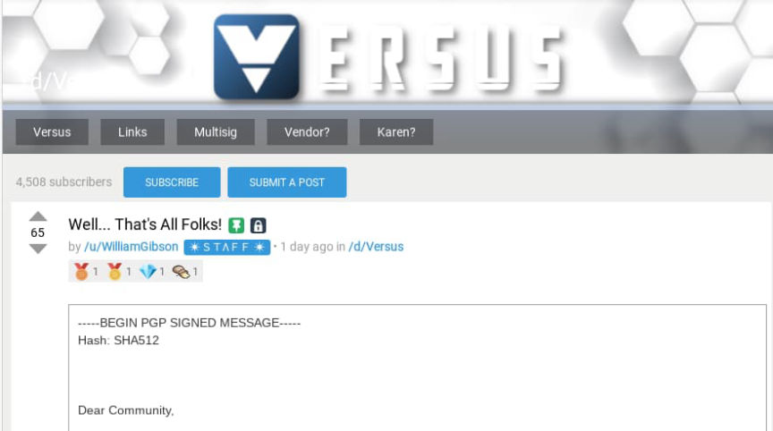
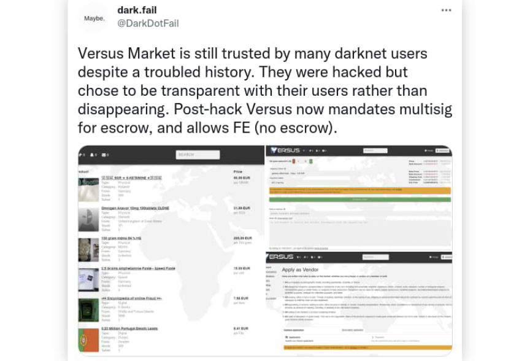
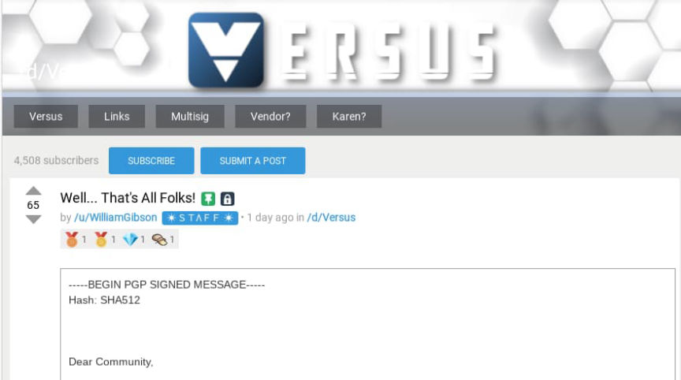
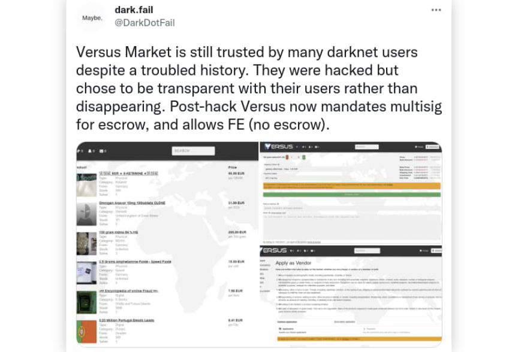

That's All Folks: Versus Market is Retiring
~5 min read | Published on 2022-05-23, tagged Darkweb-Market using 1226 words.
After several days of consideration, the administrators of Versus Market decided to retire.
In a post on May 18, 2022, AlphaBay administrator DeSnake published an announcement on Dread about “security issues on Versus.” DeSnake then worked with the Dread user /u/threesixty to verify the existence of the vulnerability discovered by the hacker.

DeSnake’s explained the exploit in his Dread post:
“The exploit is extremely simple but compromising. It allows for full access to the underlining file system on the server. This include information within the /etc/ directory as well as wallet directories. It is a full information compromise of the system. Everything to the server’s IP address, to the backup of the database in the admin home folder, to the wallet files themselves. I am able to traverse nearly the entire file system with web server level access. There is no jail, WAF, and minimal care to limit the information disclosure in the event of a web server compromise. I am able to view the history of IP addresses which have previously accessed the server.”
Paris, the co-administrator of Dread, later verified the exploit’s existence.
The market has been unreachable since DeSnake published the disclosure on Dread, if not earlier (the market’s backend returned a “white screen of death” after some of DeSnake’s testing). On May 22, 2022, Versus Market staff member /u/WilliamGibson announced the market’s permanent retirement. In the announcement, WilliamGibson wrote that Versus Market’s staff spent several days analyzing the severity of the vulnerability.
“After an in-depth assessment, we did identify a vulnerability which allowed read-only access to a 6+ month old copy of the database as well as a potential ip leak of a single server we used for less than 30 days,” WilliamGibson wrote.
The market wanted to contest some of the claims made about the vulnerability. Specifically, WilliamGibson wrote, “there was no server pwn and users/vendors have nothing to worry about as long as standard and basic opsec practices have been utilized (for example, PGP encryption).” Members of the market’s team feel as if a “clear agenda” existed in the way people handled the discovery and disclosure of the vulnerability.

Others on Dread have questioned DeSnake’s involvement in the disclosure, pointing out that AlphaBay inevitably benefits from the demise of any competition. One Dread user asked, “all good intentions aside. Isn’t it an advantage to eliminate your competition and gain more users for your own marketplace?”
DeSnake answered the question, stating, “yes it is and we do not hide that. As I explained in several posts some minutes ago the effect of such a vulnerability is much, much bigger to all marketplaces and the scene as a whole and while we do benefit from it, it is a small if not insignificant compared to what could have actually happened.”
Paris provided a similar answer and suggested that law enforcement had already compromised the server unless they were “sitting on their hands.”
The sentiment of users commenting on posts about the vulnerability appears to be generally balanced. Although many are skeptical of the way the motivations for DeSnake’s disclosure, others thanked the parties involved for “not outright exposing the exploit and/or leaking the database.” (DeSnake claimed that he did “not leak the database or [steal] any coins.” The market recovered from a Bitcoin theft once before when hackers drained Versus’ escrow wallet).

WilliamGibson’s retirement post highlighted the market’s climb to the top.
“We built Versus from scratch and ran for 3 years. We built a community and even became the #1 DNM when we never intended for that to be the goal. At a certain point, there is no further way up to go, only down, and in this business it is best to not make decisions out of pride. While we are not ending on the note that we would have liked, we hope that the truth about the actual scope of the vulnerability, combined with the impact we have had on the community, leaves users remembering Versus fondly for years to come. Versus Market has officially retired and we thank you for your support and being part of something that hopefully defined the future of DNM’s.”
And he closed by thanking the community and telling Versus Market vendors that he will provide a link where they will be able to access their transactions without a locktime.<details id="signed-message-from-williamgibson"><summary class="u__s a2w">Signed Message from WilliamGibson</summary><div class="a2x"><div class="highlight"><pre tabindex="0" class="chroma"><code class="language-fallback" data-lang="fallback"><span class="line"><span class="cl">-----BEGIN PGP SIGNED MESSAGE-----</span></span><span class="line"><span class="cl">Hash: SHA512</span></span><span class="line"><span class="cl"></span></span><span class="line"><span class="cl"></span></span><span class="line"><span class="cl"></span></span><span class="line"><span class="cl">Dear Community,</span></span><span class="line"><span class="cl"></span></span><span class="line"><span class="cl">There is no doubt that there has been a lot of concern and uncertainty regarding Versus in the last few days. Most of you that have come to know us have rightfully assumed that our silence has been spent working behind the scenes to evaluate the reality of the proposed vulnerability. After an in-depth assessment, we did identify a vulnerability which allowed read-only access to a 6+ month old copy of the database as well as a potential ip leak of a single server we used for less than 30 days. We take any and every vulnerability extremely seriously but we do think that its important to contend a number of the claims that were made about us. Specifically of importance: there was no server pwn and users/vendors have nothing to worry about as long as standard and basic opsec practices have been utilized (for example, PGP encryption)</span></span><span class="line"><span class="cl">In many ways, we are glad to see the community coming together to improve everyone's security, this was our dream from the beginning with Versus, though we will say that there was a clear agenda behind the way this was originally handled, but we leave you to draw your own conclusions</span></span><span class="line"><span class="cl">Once we identified the vulnerability, we were posed with a fork in the road, to rebuild and come back stronger (as we had done before) or to gracefully retire. After much consideration, we have decided on the latter. We built Versus from scratch and ran for 3 years. We built a community and even became the #1 DNM when we never intended for that to be the goal. At a certain point, there is no further way up to go, only down, and in this business it is best to not make decisions out of pride. While we are not ending on the note that we would have liked, we hope that the truth about the actual scope of the vulnerability, combined with the impact we have had on the community, leaves users remembering Versus fondly for years to come. Versus Market has officially retired and we thank you for your support and being part of something that hopefully defined the future of DNM's.</span></span><span class="line"><span class="cl"></span></span><span class="line"><span class="cl">For all our vendor:</span></span><span class="line"><span class="cl">We will soon publish a link where you guys can get your transactions without the locktime. No need to wait 90 days.</span></span><span class="line"><span class="cl">It was a good run and I would like to thank you all.</span></span><span class="line"><span class="cl"></span></span><span class="line"><span class="cl">All the best,</span></span><span class="line"><span class="cl">William Gibson</span></span><span class="line"><span class="cl"></span></span><span class="line"><span class="cl">-----BEGIN PGP SIGNATURE-----</span></span><span class="line"><span class="cl"></span></span><span class="line"><span class="cl">iQKTBAEBCgB9FiEEFAl5ki+ljOnGotMlXFDURnuuQqEFAmKKRLJfFIAAAAAALgAo</span></span><span class="line"><span class="cl">aXNzdWVyLWZwckBub3RhdGlvbnMub3BlbnBncC5maWZ0aGhvcnNlbWFuLm5ldDE0</span></span><span class="line"><span class="cl">MDk3OTkyMkZBNThDRTlDNkEyRDMyNTVDNTBENDQ2N0JBRTQyQTEACgkQXFDURnuu</span></span><span class="line"><span class="cl">QqHryQ/+IAUfX7anIWAESD5AIPz/gBt9ufFovPHWl13SCDghpgt9v0Zu6zv03WSK</span></span><span class="line"><span class="cl">1e/RlVUTXfAfMdyvlXCMy6ItdtEsQi4dBHzy/exgr9Obrg0NLu4ie1poyp7c3+Vk</span></span><span class="line"><span class="cl">h3Ok6PX2FcCSKMNTZUYa0z7ycHK+NOop+IfG/MErPVRx0eVMvjCQRw3+QMgVm75P</span></span><span class="line"><span class="cl">NqnCh1bdesOReMAbnMrdqTLWTfgIxAXJ4KMhxbawBx1SWg+34wBcHbTjGh/SIlHI</span></span><span class="line"><span class="cl">vTBN6ROt3bxc6M+8JPxAMb9+Ai1h1rcqgYy+T3wW3bkP97eEtbkOI4jKwsUhyiLQ</span></span><span class="line"><span class="cl">Zoq9PNkzRRIiyxzttdBB49tWGUewGKTgnWlmQc4LEcMGK13jAu0uJ2r+wsq24Kl3</span></span><span class="line"><span class="cl">YuQjzkN8bZCLqFyy+Zdu1uJszER1RGSFTk6QtMBtztlNHGX7XpDQXbz+4OXhwCzj</span></span><span class="line"><span class="cl">ag58VyosXNI51LPEuzNlNWszE6r+HuS0Jcjh6ImsMYL6NlhmZ+uz2zWVXO1xL90O</span></span><span class="line"><span class="cl">eTx4Zb3kCWHSppUZJivnEd6I3tvgE1pfkP9y2R9RmcWif9JPsnNwCsc3pzStrPAE</span></span><span class="line"><span class="cl">c26wWvrKeEU5Gr+5PYMY3YDciTSUnER/k8/s9bCUm7v+NkIyJAOb2fNOmL8gSl8e</span></span><span class="line"><span class="cl">pQ0kYSAedfNSiQptiK6lEK+0d5oDy99MTxWGbHNY2Y+akisl/v4=</span></span><span class="line"><span class="cl">=QV1O</span></span><span class="line"><span class="cl">-----END PGP SIGNATURE-----</span></span></code></details>
dreadytofatroptsdj6io7l3xptbet6onoyno2yv7jicoxknyazubrad.onion/post/d492c9d27bceb87fed69
In a post on May 18, 2022, AlphaBay administrator DeSnake published an announcement on Dread about “security issues on Versus.” DeSnake then worked with the Dread user /u/threesixty to verify the existence of the vulnerability discovered by the hacker.

WilliamGibson, a Versus staffer, announced the market's shutdown on Dread.
DeSnake’s explained the exploit in his Dread post:
“The exploit is extremely simple but compromising. It allows for full access to the underlining file system on the server. This include information within the /etc/ directory as well as wallet directories. It is a full information compromise of the system. Everything to the server’s IP address, to the backup of the database in the admin home folder, to the wallet files themselves. I am able to traverse nearly the entire file system with web server level access. There is no jail, WAF, and minimal care to limit the information disclosure in the event of a web server compromise. I am able to view the history of IP addresses which have previously accessed the server.”
Paris, the co-administrator of Dread, later verified the exploit’s existence.
The market has been unreachable since DeSnake published the disclosure on Dread, if not earlier (the market’s backend returned a “white screen of death” after some of DeSnake’s testing). On May 22, 2022, Versus Market staff member /u/WilliamGibson announced the market’s permanent retirement. In the announcement, WilliamGibson wrote that Versus Market’s staff spent several days analyzing the severity of the vulnerability.
“After an in-depth assessment, we did identify a vulnerability which allowed read-only access to a 6+ month old copy of the database as well as a potential ip leak of a single server we used for less than 30 days,” WilliamGibson wrote.
The market wanted to contest some of the claims made about the vulnerability. Specifically, WilliamGibson wrote, “there was no server pwn and users/vendors have nothing to worry about as long as standard and basic opsec practices have been utilized (for example, PGP encryption).” Members of the market’s team feel as if a “clear agenda” existed in the way people handled the discovery and disclosure of the vulnerability.
Versus Market is the most popular Western marketplace | Picture: @DarkDotFail
Others on Dread have questioned DeSnake’s involvement in the disclosure, pointing out that AlphaBay inevitably benefits from the demise of any competition. One Dread user asked, “all good intentions aside. Isn’t it an advantage to eliminate your competition and gain more users for your own marketplace?”
DeSnake answered the question, stating, “yes it is and we do not hide that. As I explained in several posts some minutes ago the effect of such a vulnerability is much, much bigger to all marketplaces and the scene as a whole and while we do benefit from it, it is a small if not insignificant compared to what could have actually happened.”
Paris provided a similar answer and suggested that law enforcement had already compromised the server unless they were “sitting on their hands.”
The sentiment of users commenting on posts about the vulnerability appears to be generally balanced. Although many are skeptical of the way the motivations for DeSnake’s disclosure, others thanked the parties involved for “not outright exposing the exploit and/or leaking the database.” (DeSnake claimed that he did “not leak the database or [steal] any coins.” The market recovered from a Bitcoin theft once before when hackers drained Versus’ escrow wallet).

DarkDotFail claims the market had “a troubled history.”
WilliamGibson’s retirement post highlighted the market’s climb to the top.
“We built Versus from scratch and ran for 3 years. We built a community and even became the #1 DNM when we never intended for that to be the goal. At a certain point, there is no further way up to go, only down, and in this business it is best to not make decisions out of pride. While we are not ending on the note that we would have liked, we hope that the truth about the actual scope of the vulnerability, combined with the impact we have had on the community, leaves users remembering Versus fondly for years to come. Versus Market has officially retired and we thank you for your support and being part of something that hopefully defined the future of DNM’s.”
And he closed by thanking the community and telling Versus Market vendors that he will provide a link where they will be able to access their transactions without a locktime.<details id="signed-message-from-williamgibson"><summary class="u__s a2w">Signed Message from WilliamGibson</summary><div class="a2x"><div class="highlight"><pre tabindex="0" class="chroma"><code class="language-fallback" data-lang="fallback"><span class="line"><span class="cl">-----BEGIN PGP SIGNED MESSAGE-----</span></span><span class="line"><span class="cl">Hash: SHA512</span></span><span class="line"><span class="cl"></span></span><span class="line"><span class="cl"></span></span><span class="line"><span class="cl"></span></span><span class="line"><span class="cl">Dear Community,</span></span><span class="line"><span class="cl"></span></span><span class="line"><span class="cl">There is no doubt that there has been a lot of concern and uncertainty regarding Versus in the last few days. Most of you that have come to know us have rightfully assumed that our silence has been spent working behind the scenes to evaluate the reality of the proposed vulnerability. After an in-depth assessment, we did identify a vulnerability which allowed read-only access to a 6+ month old copy of the database as well as a potential ip leak of a single server we used for less than 30 days. We take any and every vulnerability extremely seriously but we do think that its important to contend a number of the claims that were made about us. Specifically of importance: there was no server pwn and users/vendors have nothing to worry about as long as standard and basic opsec practices have been utilized (for example, PGP encryption)</span></span><span class="line"><span class="cl">In many ways, we are glad to see the community coming together to improve everyone's security, this was our dream from the beginning with Versus, though we will say that there was a clear agenda behind the way this was originally handled, but we leave you to draw your own conclusions</span></span><span class="line"><span class="cl">Once we identified the vulnerability, we were posed with a fork in the road, to rebuild and come back stronger (as we had done before) or to gracefully retire. After much consideration, we have decided on the latter. We built Versus from scratch and ran for 3 years. We built a community and even became the #1 DNM when we never intended for that to be the goal. At a certain point, there is no further way up to go, only down, and in this business it is best to not make decisions out of pride. While we are not ending on the note that we would have liked, we hope that the truth about the actual scope of the vulnerability, combined with the impact we have had on the community, leaves users remembering Versus fondly for years to come. Versus Market has officially retired and we thank you for your support and being part of something that hopefully defined the future of DNM's.</span></span><span class="line"><span class="cl"></span></span><span class="line"><span class="cl">For all our vendor:</span></span><span class="line"><span class="cl">We will soon publish a link where you guys can get your transactions without the locktime. No need to wait 90 days.</span></span><span class="line"><span class="cl">It was a good run and I would like to thank you all.</span></span><span class="line"><span class="cl"></span></span><span class="line"><span class="cl">All the best,</span></span><span class="line"><span class="cl">William Gibson</span></span><span class="line"><span class="cl"></span></span><span class="line"><span class="cl">-----BEGIN PGP SIGNATURE-----</span></span><span class="line"><span class="cl"></span></span><span class="line"><span class="cl">iQKTBAEBCgB9FiEEFAl5ki+ljOnGotMlXFDURnuuQqEFAmKKRLJfFIAAAAAALgAo</span></span><span class="line"><span class="cl">aXNzdWVyLWZwckBub3RhdGlvbnMub3BlbnBncC5maWZ0aGhvcnNlbWFuLm5ldDE0</span></span><span class="line"><span class="cl">MDk3OTkyMkZBNThDRTlDNkEyRDMyNTVDNTBENDQ2N0JBRTQyQTEACgkQXFDURnuu</span></span><span class="line"><span class="cl">QqHryQ/+IAUfX7anIWAESD5AIPz/gBt9ufFovPHWl13SCDghpgt9v0Zu6zv03WSK</span></span><span class="line"><span class="cl">1e/RlVUTXfAfMdyvlXCMy6ItdtEsQi4dBHzy/exgr9Obrg0NLu4ie1poyp7c3+Vk</span></span><span class="line"><span class="cl">h3Ok6PX2FcCSKMNTZUYa0z7ycHK+NOop+IfG/MErPVRx0eVMvjCQRw3+QMgVm75P</span></span><span class="line"><span class="cl">NqnCh1bdesOReMAbnMrdqTLWTfgIxAXJ4KMhxbawBx1SWg+34wBcHbTjGh/SIlHI</span></span><span class="line"><span class="cl">vTBN6ROt3bxc6M+8JPxAMb9+Ai1h1rcqgYy+T3wW3bkP97eEtbkOI4jKwsUhyiLQ</span></span><span class="line"><span class="cl">Zoq9PNkzRRIiyxzttdBB49tWGUewGKTgnWlmQc4LEcMGK13jAu0uJ2r+wsq24Kl3</span></span><span class="line"><span class="cl">YuQjzkN8bZCLqFyy+Zdu1uJszER1RGSFTk6QtMBtztlNHGX7XpDQXbz+4OXhwCzj</span></span><span class="line"><span class="cl">ag58VyosXNI51LPEuzNlNWszE6r+HuS0Jcjh6ImsMYL6NlhmZ+uz2zWVXO1xL90O</span></span><span class="line"><span class="cl">eTx4Zb3kCWHSppUZJivnEd6I3tvgE1pfkP9y2R9RmcWif9JPsnNwCsc3pzStrPAE</span></span><span class="line"><span class="cl">c26wWvrKeEU5Gr+5PYMY3YDciTSUnER/k8/s9bCUm7v+NkIyJAOb2fNOmL8gSl8e</span></span><span class="line"><span class="cl">pQ0kYSAedfNSiQptiK6lEK+0d5oDy99MTxWGbHNY2Y+akisl/v4=</span></span><span class="line"><span class="cl">=QV1O</span></span><span class="line"><span class="cl">-----END PGP SIGNATURE-----</span></span></code></details>
dreadytofatroptsdj6io7l3xptbet6onoyno2yv7jicoxknyazubrad.onion/post/d492c9d27bceb87fed69